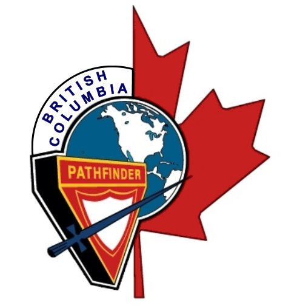

Welcome to the British Columbia Conference Pathfinder Drill website. Here you will find drill resources for pathfinders and instructors. We hope you find this site useful and informative. Enjoy your stay and remember to check back!
The official Pathfinder Drill Manual supersedes all prior drill instructions and is the only drill manual authorised for use within the Canadian Union. It consists of four chapters: Chapter 1 - Introduction; Chapter 2 - Squad Drill at the Halt; Chapter 3 - Squad Drill on the March; Chapter 4 - Colour Drill. It is available in two versions: online (web) only and PDF.
The online drill manual requires an internet connection. The Table of Contents contains links to each drill section as well as audio files that demonstrate the correct delivery and timing of each drill command.
The PDF drill manual requires a suitable PDF reader, such as Adobe Acrobat Reader, for viewing and printing. Visit http://www.adobe.com for the latest version.
Printing Tips: If you print the PDF manual to an inkjet printer, set your print options to print in colour. Printing in greyscale may cause the images to print with dots or wavy lines in the background. If you print using a laser printer and the images show dots in the background, try switching the graphic options to print raster graphics.
The following audio and music clips are very useful training aids if played during drill practice. All clips are in mp3 format.
These audio clips use a bass drum to beat marching cadences:
These music clips are military marching cadences:
Video clips demonstrating the proper timing and execution of pathfinder drill movements will eventually be posted here. Until then, we have provided links to several drill videos.
18 Dartmouth Royal Canadian Air Cadet Squadron - NS Drill Champs 2007
Information regarding drill events will be posted here.
Please send any comments or questions to Delwin Clarke at delwinclarke@rogers.com.